|
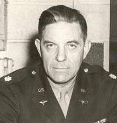 Click the image to enlarge. |
|
|
Byington Ford was born in Downieville, California, on November 1, 1890, the son of Tirey L. Ford, a prominent attorney who served as a California state senator and attorney general. Click here to read the Wikipedia article about Byington Ford. Click here to learn more about Byington Ford and his father, Tirey L. Ford, in the book Tirey Lafayette Ford. |
|
| Important Facts | |
| November 1, 1890 | Byington "By" Ford was born in Downieville, Sierra County, California. He was the son of Tirey L. Ford, a former California state senator and attorney general who also authored Dawn of the Dons, a history of the Monterey Peninsula, and Emma Byington Ford. |
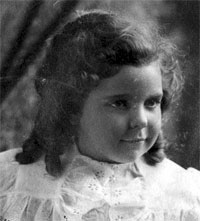 |
| 1893 | Byington's parents moved to San Francisco, because his father accepted a partnership with ex-Senator Charles W. Cross in the firm Cross, Ford, Hall & Kelly. | |
| June 8, 1900 | The US Census lists and F. L. Ford (42), Emma (37) Mary R. (11) and Byington (9) living in San Francisco, California. Source: US Federal Census. | |
| 1906 | During the San Francisco 1906 earthquake, Byington, age 15, was living on Haight Street in San Francisco. | |
| 1907-1910 | Byington started University at Santa Clara College, the private Jesuit Santa Clara College in 1907. He was popular in college. Byington was elected President of the debating team. Source: San Francisco Daily Times, page 17. | |
| 1907-1910 | Byington enjoyed baseball and was photographed with the 1907 Santa Clara Junior Baseball Team and the 1909 Santa Clara Baseball Team. Source: Scrapbook created by Byington Ford. |
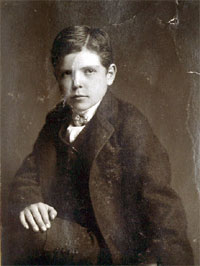 |
| June 22, 1910 | At age 19, Ford graduated from the Santa Clara College with a Bachelor of Arts degree. He gave a speech about 'Higher Education and Religion'. Source: Santa Clara College Alumni Association; San Francisco Chronicle (San Francisco, California) Page: 2. | |
| April 30, 1910 | At age 19, Byington was listed in the 1910 U.S. Census with his father, Tirey Ford (52), his mother, Emma B. (47), his sister, Relda F. (27), and his brother, Tirey L. Jr. (12). Source:1910 U.S. Census for Maple Street, San Francisco, California, Series: T624 Roll: 100 Page: 85. | |
| 1911-1913 | Byington got his master’s at the University of California at Berkeley. He was one of the officers elected to head the Berkeley State University permanent athletic organization and was listed as treasurer. Byington played varsity baseball at U.C. Berkeley while earning his degree. Source: San Francisco Chronicle (San Francisco, California) Page: 8. | |
| November 30, 1911 | Byington was mentioned in an article in the San Francisco Call regarding the California Pelican, a University of California, Berkeley humor magazine. He contributed a drawing occupying a page in the magazine. Source: San Francisco Call, Volume 110, Number 183. | |
| 1912 | Byington graduated from the University of California, Berkeley, where he earned a Master of Arts degree in the College of Letters. He majored in history, and his thesis was titled The County Court, 1066–1307. He was listed as a member of Delta Kappa Epsilon at UC Berkeley and was mentioned in an article noting the university’s record number of diplomas. Sources: University of California Register, Berkeley, 1912–13 (University of California Press, 1913); The 1914 Blue and Gold (published by the Junior Class, 1913); The San Francisco Call, p. 4. |
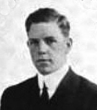 |
| 1913-1914 | Byington also studied law at St. Ignatius College, before entering the real estate field in San Francisco. He was photographed as one of the baseball varsity players at St. Ignatius College. Sources: Monterey Peninsula Herald, January 22, 1985. Scrapbook created by Byington Ford. | |
| 1915 | Byington was listed as an officer and director of the San Francisco Electric Railways company. His uncle, Lewis F. Byington was also listed as an officer and director. Head office was at the Crocker Building, San Francisco. Source: Walker's Manual of Western Corporations. | |
| 1916 |
Byington became founder and director of the Animated Film Corp. in San Francisco. His father, Tirey L. Ford, was president of the company. The company produced animated cartoons long before Walt Disney. Byington worked with Benjamin "Tack" Knight and Pinto Colvig. The company made numerous popular short animated features and is credited with creating the first color cartoon in 1919.
The prospering endeavor ended, with the entry of the U.S. into World War I. Click on photo to see large size image of the Animated Cartoon film Company. Tack Knight moved to San Francisco in 1913. He attended the Mary Hopkins Institute of Art and began his newspaper career at the Oakland Tribune in 1914. He drew sports and commercial art, and did animated cartooning. Source: Comiclopedia website. |
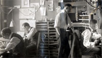 Animated Cartoon Film Corporation |
| 1916 | Byington was listed as "Ford Byington with Urban Realty Imp Co. r 3800 Clay." His father and mother are listed as "Ford Tirey L (Emma) at 593 Market h 3800 Clay." Source: Fold3, City Directories for San Francisco, California. |
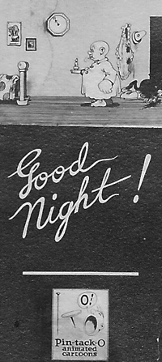 |
| June 27, 1916 | It was announced that Byington ford was engaged to Miss Jean Wharton from Plainfield, New York. Miss Wharton spent the winter in California and was leaving to go back East. Source: San Francisco Chronicle (San Francisco, California) Page: 7. | |
| August 14, 1916 | Byington Ford was said to be "anticipating a visit next month from Miss Jean Wharton from Plainfield, N. J, whose engagement to Byington Ford was recently announced." Source: San Francisco Chronicle (San Francisco, California) Page: 6. | |
| October 22, 1916 | Tirey L. Ford was host at a luncheon given at the Stewart Hotel for the Animated Cartoon Film Corporation. Artists, cartoonists and photographers were discussed and views exchanged. Among those present were Frederick Burgh, president of the corporation; Byington Ford, secretary and treasurer; C. E. Cleaveland, superintendent, and Seth Heney, manager. Source: San Francisco Chronicle, page 30. | |
| June 1917 | Byington Ford was listed at 995 Market Street with the Animated Cartoon Film Company and as Director and Officer for the San Francisco Electric Railways. His father, Tirey L. Ford, was listed at the Balboa Building with the Animated Cartoon Film Company, and the Sierra and San Francisco Power Company. Source: Walker's Manual of California Securities and Directory of Directors. | |
| July 21, 1917 | Ford was listed as one of the "Sons of Prominent Families" and engaged to Miss Jean Wharton visiting from New Jersey. Source: San Francisco Chronicle (San Francisco, California) Page: 2. | |
| 1917 | Ford was listed as "Ford Byington L. genl mgr Animated Carton Film Corp. r 3800 Clay." His father and mother are listed as "Ford Tirey L (Emma) at 593 Market h 3800 Clay." Source: Fold3, City Directories for San Francisco, California. | |
| November 15, 1917 | Byington Ford was listed as a Private in the Roster Fortieth Division, Battery B. Source: | |
| 1917 | Byington was listed in the Santa Clara College yearbook as 1st L., Field Artillery. | |
| 1917-1918 | Byington enlisted in the California National Guard and went to Officers Reserve Corps Training Camp at the Presidio of San Francisco where he was commissioned as Lieutenant, and went to France during World War I. He became Captain in the 26th "Yankee" Division. In France, he trained at the St.. Cyr. Cavalry school. Source: World War I Draft Registration Cards, 1917-1918. |
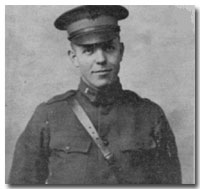 |
| 1918 | An article titled: "Cartoon Concern Retires" said that "The Animated Cartoon Film Corporation, David Hewes building, has turned its contracts over to the Tam Slide Company and will retire from the field after June 1. Byington Ford, the active head of the concern is in France, and it is possible that upon his return the business may be resumed, as it was very successful previous to his departure. The Tam Slide Company plans to take over the quaters of the Animated Cartoon Film Corporation and to use the present equipment." Souce: The Moving Picture World, 1918. | |
| February 11, 1918 | While aboard the Tuscania en route to France, Ford's ship was torpedoed, however, he was rescued. An article entitled: "Attorney Ford Gets Word From Son Overseas". Byington's father, Tirey L. Ford, announced the rescue of his son First Lieutenant Byington Ford. "It was the happiest news I ever received in my life. We did not even know that he had started for France, but when we read that many of his friends in the field artillery were on the transport, we began to worry." Source: San Francisco Chronicle (San Francisco, California) Page: 2. | |
| May 24, 1918 | Byington Ford were mentioned as one of three men who graduated at the head of a reserve officers' class of 600 men in training camp in France. Source: San Francisco Chronicle (San Francisco, California) Page: 8. | |
| October 24, 1918 | His parents received word that their son, Lieutenant Byington Ford, has been put in command of a battery in France. Byington was with the field artillery branch of the service and had been in action for several weeks. Source: San Francisco Chronicle (San Francisco, California) Page: 7. | |
| December 21, 1918 | Lieut. Byington Ford, of 3800 Clay St., San Francisco, was listed a "wounded severely". Source: San Luis Obispo Daily Telegram (San Luis Obispo, California) Page: 7 | |
| 1918-1919 | While in command of a battery of field artillery of the 26th Division, was severely wounded and gassed in the Meuse-Argonne offensive. He was placed in a base hospital near Bordeaux. He served as a battery commander in the 192d F.A., Toul Sector, until he was wounded. He was commissioned as 'Captain' with several decorations following his removal to the military hospital. Ford saw active service practically the whole time he was in France. Source: The California Monthly - Volume 11 - Page 293. | |
| February 8, 1919 | Byington's sister (Relda) was married to Samuel F. B Morse - the great grandson and namesake of the inventor of the telegraph. Morse formed the Del Monte Properties Company and acquired those holdings, which included Del Monte Forest and the popular Hotel Del Monte (now the Naval Postgraduate Schoolin Monterey). The funding came from the Pacific Improvement Company. | |
| March 10, 1919 | Byington returned from France to Carmel, California. Source: San Francisco Chronicle; "Captain Byington Ford, Son of Tirey L. Ford, Among Men to Arrive"; The Redwood, Vol. 20, Santa Clara University Library. | |
| August 2, 1919 | Byington Ford was prominent in Polo matches as a summer visitor at Del Monte. Source: The WASP (July-Dec.), 1919. | |
| June 21, 1919 | Ford practiced polo at weekend matches at Hotel Del Monte to get ready for the July 4th tournament held at Del Monte. Source: San Francisco Chronicle (San Francisco, California) Page: 9 | |
| August 25, 1919 | Ford played in the Del Monte Reds who scored 6 to 4/3/4 victory of the Whites in a polo match at Hotel Del Monte. Source: San Francisco Chronicle (San Francisco, California) Page: 9 | |
| December 6, 1919 | Byington Ford was at a dinner dance in the Palm Grill room at the Hotel Del Monte hosted by Mr. and Mrs. Samuel F. B. Morse. Source: The WASP (July-Dec.), 1919. | |
| Ford became a manager at the Del Monte Properties in Pebble Beach, heading their real estate department for twelve years. He rode horseback through the undeveloped parts of Del Monte Forest and later headed their Real Estate Department for 12 years. | ||
| January 12, 1920 | The US Census lists Byington Ford (29) as an employee and living at the Hotel Del Monte in Monterey, California. Source: 1920 United States Federal Census. | |
| April 11, 1920 | At the end of the polo season, Byington Ford along with Mr. and Mrs. Samuel F.B. Morse entertained at a dinner in Pebble Beach, near Del Monte Lodge. Source: The San Francisco Chronicle. | |
| October 26, 1920 | An announcement was published of the engagement of Miss Marion Boisot of Chicago, and Byington Ford. They set November 17 as the date for the wedding. Ford was said to be manager of the Pebble Beach properties for the Del Monte Properties Company. Source: Chicago Daily Tribune; San Francisco Chronicle (San Francisco, California) Page: 45. |
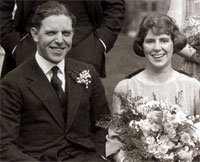 Byington Ford and Marion Boisot Wedding">November 17, 1920 |
| November 13, 1920 | Mr. and Mrs. Boisot came to Pebble Beach from Chicago and leased the Karmany house for the winter in preparation for their daughters marriage to Byington Ford. Source: The WASP (July-Dec.), 1920. | |
| November 17, 1920 | Byington married Marion Boisot at the Pebble Beach Lodge in Pebble Beach, California. The couple took a motor tour through the Southern California on their honeymoon. They made their home at the Hotel Del Monte. Source: The Redwood, Vol. 20; San Francisco Chronicle, Page: 11 | |
| November 20, 1920 | Samuel F. B. Morse gave a luncheon at the Del Monte golf clubhouse in honor of his brother-in-law, Byington Ford, and Miss Marion Boisot. Source: San Francisco Chronicle, Page: 14. | |
| November 27, 1920 | An article talks about Byington Ford, his bride, and parents. The Fords intend living in Pebble Beach. Source: The WASP (July-Dec.), 1920. | |
| December 18, 1920 | Under the title "Society at Del Monte" talk about Mr. and Mrs. Byington Ford making their home at Hotel Del Monte. Mr. and Mrs. Tirey L. For have been residing at Hotel Del Monte for the past two months. Source: The WASP (July-Dec.), 1920. | |
| January 26, 1921 | Mr. and Mrs. Samuel F. B. Morse entertained a party in the Palm Grill at the Hotel del Monte on Friday evening. Among those at dinner, with dancing were, Mr. and Mrs. Byington Ford. Source: The San Francisco Chronicle. | |
| Feb. 18, 1921 | Pinto writes about starting up a company called the "Pinto Cartoon Comedies". Byington Ford, Pinto and Boothwick each owned 20% and Mr. Boisot, of Pasadena, owns 15%. Morse and two others own the rest of the stock. Source: Letter by Pinto. | |
| June 12, 1921 | Byington mother, Mrs. Emma Byington Ford died on June 10, 1921 at the family home at 2800 Jackson Street. Funeral services were at their son Byington's home at 3860 Clay Street and proceed to St. Edwards's Church on California Street, between Walnut and Laurel Street. Source: San Francisco Chronicle (San Francisco, California) Page: 9. | |
| August 22, 1921 | Mary Jane Ford was born in San Francisco, California. Several newspaper articles announced the congratulations on the birth of a daughter. Source: California Birth Index; San Francisco Chronicle (San Francisco, California) Page: 45. |
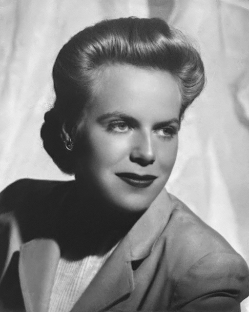 |
| December 15, 1921 | Marion's brother, Louis M. Boisot and his wife came up from Pasadena to visit and celebrate the birth of Mary Jane. Source: San Francisco Chronicle (San Francisco, California), Page: 14. | |
| 1922 | Marion's father, Emile K. Boisot and his wife from Pasadena, were at the Del Monte Hotel for a month visit. They spent much of their time with their daughter, whose home at Pebble Beach was almost completed. Source: The Argonaut, Vol. 90-91, 1922, Calif, San Francisco. | |
| June 17, 1922 | The Carmel Woods in north Carmel, was offered by the Del Monte Properties Company. It was a tract of twenty-five acres, divided into 119 building lots of a unit size of 40x100 feet. Byington Ford was manager of the subdivision. Some of the lots were offered for $350 each. Source: San Francisco Chronicle, Page: 8. |
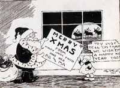 |
| 1920s and 1930s | Byington initiated the development of the Carmel Mission Tract, a subdivision of Del Monte Properties located on the north side of Carmel. Developed in the 1920s and 1930s, the tract was envisioned as a Spanish-style village, featuring a central plaza and church. The homes were designed in the Spanish Revival style, with red tile roofs and stucco walls. Source: Carmel Mission Tract website. | |
| October 1, 1922 | Byington and Marion Ford built a Spanish-style home on 17-Mile Drive in Pebble Beach, which faces the first green of the golf course. It was constructed by Bernard R. Maybeck. Source: Bernard Maybeck Web site; San Francisco Chronicle, Page 48. |
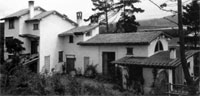 |
| March 1923 | Byington Ford was listed as a semifinalists in the Pebble Beach Gold Vase Golf Championships. Source: Pebble Beach: The Official Golf History, Neal Hotelling - 2009. | |
| May 17, 1923 | Patricia Reid Ford was born in San Francisco, California. Source: California Birth Index. |

|
| 1924 | The San Francisco Blue Book listed Byington and Marion Ford as living on 3800 Clay (Pacific 1690) and Del Monte Hotel, California. His father, Tirey L. Ford was listed as living at the Balboa Building, 593 Market Street (Tel. Douglas 380). Source: San Francisco Blue Book Directory, 1924. | |
| 1924 | Byington Ford, Roger Lapham, and Marion Hollins (the United States Women's Amateur champion in 1921) formed a syndicate that purchased 170 acres from the del Monte Properties for $150.000. The land was used to create a special golf club called Cypress Point and private homes. Source: My Three Ideal Courses, Golf Digest, by Herbert Warren Wind, October 26, 2008; Routing the Golf Course: The Art & Science That Forms the Golf Journey by Forrest L. Richardson - 2002. | |
| February 19, 1925 | Byington Ford appeard on a membership list of the 68 charter members of the Monterey Peninsula Country Club. Source: The First Fifty Years 1925-1975. | |
| December 4, 1926 | Audrey Ford was born in San Francisco, California. The event appeared in the SF paper, which said the couple are being congratulated upon the birth of a daughter, which occurred at Dante Sanatorium on December 4. Source: California Birth Index; San Francisco Chronicle (San Francisco, California) Page: 8. |
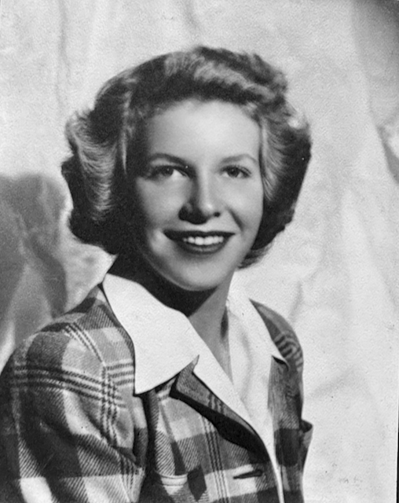 |
| 1927 | Ford, Mr. and Mrs. Byington and Marion Boisot were listed in the SF Social Register. There address was listed as Pebble Beach. Source: San Francisco Social Register 1927. | |
| February 16, 1927 | Jo Mora played the leading part in "the Bad Man" assisted by Ruth Austin, Byington Ford and other actors. Source: San Francisco Chronicle (San Francisco, California), Page: 10 | |
| August 11, 1927 | Ford directed the production of "The Carmel Follies" at the Hotel del Monte Grill, which was put on by the Carmel and Pebble Beach society. Source: San Francisco Chronicle (San Francisco, CA), Page: 8. | |
| September 15, 1927 | Ford was active for years as a baseball player and coach in the Peninsula's old Abalone League with other pioneers such as Samuel F.B. Morse and author Jimmy Hopper. Received a certificate as a Abalone League class 'A' membership. Source: Abalone League Certificate. | |
| 1928 | To raise money for a league diamond, he staged plays at the Carmel Arts and Crafts Theater, recognized today as The Golden Bough. He was the leading man in the play "The Copperhead" at the Carmel playhouse. He acted in, directed, or wrote more than 45 plays at the Carmel Arts and Crafts Theater. |
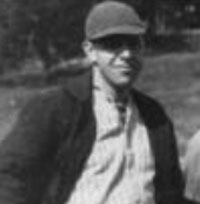 |
| June 26, 1928 | His father, Tirey L. Ford, died of a heart attack, in bed after he had ordered breakfast sent up to his room, at the Pacific Union Club in San Francisco. Source: S. F. Newspaper. |
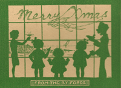 |
| February 12, 1929 | Tirey L. Ford gave a dinner at their home in Pebble Beach for his brother, Tirey L. Ford and Elizabeth Foster in celebration of their recent marriage. Source: San Francisco Chronicle (San Francisco, California) Page: 10 | |
| 1930 | US Federal Census lists Byington Ford (39), Marion B. (32), Mary Jane (8), Patricia (6), and Audrey (3) living in Pebble Beach, Monterey, California. Source: 1930 United States Federal Census. | |
| 1931 | He formed and owned the Carmel Realty Company, still a major force in the city today. Source: CARMEL VALLEY HISTORIC AIRPARK SOCIETY Web site; Selected letters of Langston Hughes, 2015. | |
| 1930's | Byington bought a 400 acre ranch at Via Las Encinas in Carmel Valley, California from Frank Porter who had bought a portion of the Marian Hollins Ranch. Source: Monterey County The Dramatic Story of Its Past, Monterey Bay, Big Sur, Carmel, Salinas Valley”, by Agusta Fink, 1972. Western Tanager Press/Valley Publishers, San Francisco, page 202. | |
| June 16, 1934 | Byington directed a Douglas school play called "Inchling" in which Mary Jane (lead), Pat (one of the two 'nerds', and Audrey Ford (danced) were in. Source: San Francisco Chronicle, Page: 19. | |
| June 14, 1935 | Marion was granted a divorce from Byington on the grounds of extreme cruelty. Mrs. Ford was awarded custody of her children. A property settlement was incorporated in the divorce. Source: San Francisco Chronicle (San Francisco, CA) Page: 15. | |
| August 25, 1935 | Byington Ford acted as Father Serra in the play "The Apostle of California." The play was about the early California's days under Spanish rule. It was re-created at the Carmel Mission commemorating the 151st anniversary of the death of Father Junípero Serra, Franciscan priest who founded the California missions. Source: Historic Images Inc., 1935 Press Photo Byington Ford and Hildreth Masten in Carmel Mission Play. /td> | |
| December 2, 1938 | Byington presented to the city council the purchase of the El Paseo building on Dolores Street in Carmel for the City Hall. Source: The Carmel Pine Cone, December 2, 1938, Ford To Make Proposal To Council Wednesday. | |
| Feb 23, 1939 | Ford married his 2nd wife, Ruth Austin Arlen. He moved to Dolores Street and Santa Lucia in Carmel, California with wife Ruth. | |
| Late 1930's | In the late 1930s, Byington Ford bought the northeast corner of Rancho Las Laureles in Carmel Valley to establish an airpark. He was convinced that mass production of small aircraft would put a plane within the reach of anyone who could afford a car. He and his brother Tirey, developed the Carmel Valley Airport for pilot-owners who would want to be at home a minute or two after getting out of their plane. His brother Tirey built a prototype hangar house off Ford Road. During this time Larry Sweeney taught Byington how to fly and he got his first pilot's license. Source: CARMEL VALLEY HISTORIC AIRPARK SOCIETY. |
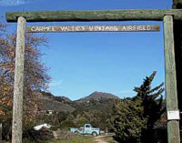 |
| April 2, 1940 | US Federal Census lists Byington Ford (48) Real Estate Agent, Ruth A. (41), Roe Marie A (18) living in Santa Lucia Avenue, Carmel, Monterey, California. Source: 1940; Census Place: Monterey, Monterey, California; Roll: T627_268; Page: 1B; Enumeration District: 27-36. |
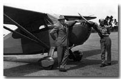 |
| 1941 | The Western Flying magazine had an article that wrote: "Monterey Airport has recently changed management, and is now operated by the Del Monte Aviation Corporation, of which Tlrey L. Ford, Jr.is President, Byington Ford Vice President, and Larry Sweeney Secretary-Treasurer. Source: Western Flying - Volume 21, Issues 1-6 - Page 72. |
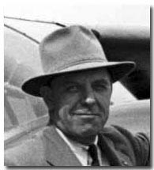 |
| December 7, 1941 | The grand opening of Airway Ranch airfield was on the same day as the attack on Pearl Harbor. The project was put on hold while Byington Ford joined the Army Air Corps to aid the war effort. The family name remains in the form of Ford Road, the street that borders part of the airstrip. Source: CARMEL VALLEY HISTORIC AIRPARK SOCIETY. | |
| 1942 | Ford enlisted in the U.S. Air Force during World War II and rose to the rank of lieutenant colonel. He established the first women’s Military Police unit at Wright-Patterson Air Force Base in Dayton, Ohio. His daughter, Mary Jane, also served during the war and was awarded the Soldier’s Medal for rescuing a drowning man. Sources: The National Archives At St. Louis; St. Louis, Missouri; World War II Draft Cards for the State of California; U.S. Army Women's Museum. Women in WII |
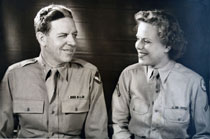 |
| 1945 | Following the War, Ford combined sales to plane owners with sales to home seekers, which included ranch-house sites of 1-3 acres. Source: Paul Freeman's Web site. |
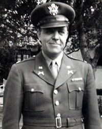 |
| 1946-1947 | Byington and Tirey Ford Jr., developed the Carmel Valley Village and Airway Market, first known as the General Store, a barber shop, a drug store and soda fountain, a beauty shop, and a liquor store. All were in walking distance of the Airpark and decorated to resemble a Mexican village. The village is about 12 miles from the mouth of Carmel Valley. Today the village is a busy place and has grown fast in recent years. Source: Monterey County California Regional Guide, by Tom Stienstra, 2008. | |
| 1949 | The State of California licensed the Carmel Valley airfield in 1949. | |
| 1952 | Byington Ford retired and sold the airfield to Peter Delfino, which was closed by the Delfino family in 2002. The Delfino family sold the property to Griggs in 2020. Source: "Well drilling underway at former C.V. airport," The Carmel Pine Cone, September 4, 2026, page 1. | |
| July 1955 | Byington continued his love for cartoons and wrote a sketch book called A Cartoon Sketch Book For Beginners. The book walks the artist through drawing different parts of the body, surroundings, and action shots Source: A Cartoon Sketch Book For Beginners, by Byington Ford, 1955. |
|
| September 24, 1970 | The Carmel Pine Cone wrote an article about the life of Byington with the title: "The fabulous career of Byington Ford." It covered Byington’s life accomplishments. Source: Carmel Pine Cone September 24, 1970. |
|
| Byington and his wife, Ruth, who was a key figure in local projects to help children with learning disabilities, made their home at the Carmel Valley Golf and Country Club until they moved to Southern California. Source: Monterey Peninsula Herald, Jan 22, 1985. | ||
| 1970 | At 80, he was still playing golf at the Carmel Valley Golf & Country Club. | |
| 1980's | Ford and Ruth move to Ventura, California. | |
| January 19, 1985 | At age 94, Byington Ford died of pancreatic cancer at his home in Ventura, California. Ford's daughters drove down for the funeral in Ventura, California. He was cremated under the direction of the Neptune Society. Memorial contributions wen to the Hospice of the Monterey Peninsula. Sources: California Death Index and Social Security Death Index; Monterey Peninsula Herald, Jan 22, 1985. | |
| November 3, 2000 | The California Historical Resources Commission voted unanimously to nominate Carmel Valley Vintage Airpark as a State Historic Resource. The Commission found that development of CVVA by Byington Ford in 1941 was significant in that it represented the first airpark in the US and the world! |

Last updated: August 5, 2026